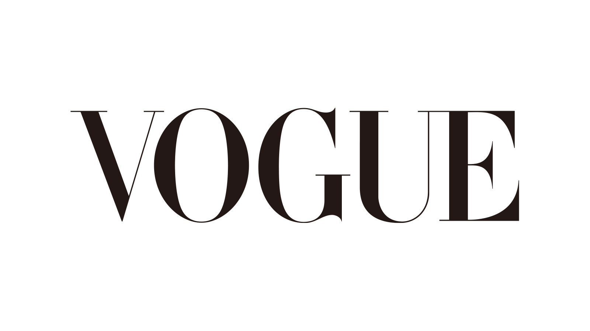
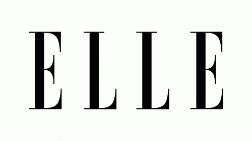
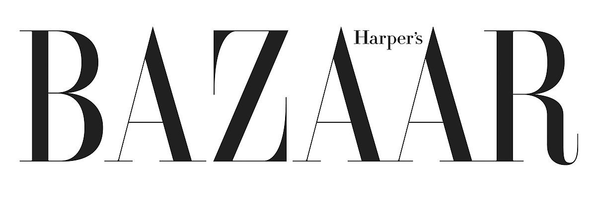

Magazine
Magazine

보그는 ‘유행’이란 뜻으로, 1892년 미국 뉴욕에서 당시 상류사회 여자들을 위한 발행물로 시작 되었습니다.
130년의 전통을 지닌 보그는 ‘하이 패션의 바이블’, ‘세계에서 가장 유명한 패션 잡지’ 등 패션 미디어로서의 권위와 대표성을 견고하게 쌓아왔습니다.
1996년에 창간된 보그 코리아는 글로벌 보그의 위상과 궤를 같이하여, 가장 영향력 있는 패션 매거진으로서 독보적인 리더십을 이어가고 있습니다.
프린트 매거진 뿐 아니라 웹, 모바일, 소셜 미디어 등 디지털 플랫폼에서도 시대의 흐름에 맞는 콘텐츠 기획과 접근으로 새로운 세대를 지속적으로
사로잡으며 강력한 하나의 브랜드로 존재감을 발휘하고 있습니다.

엘르는 1945년 프랑스에서 론칭한 후 현재 46개국에서 발행되어 전 세계 약 3천만 독자들과 만나고 있는
세계 최대 규모의 네트워크를 자랑하는 No.1 패션 미디어입니다.
한국에서는 1992년 국내 최초의 인터내셔널 패션 매거진으로 태어나 지난 2018년 11월 26주년을 맞이했고,
올해로 27년째 최상의 비주얼과 다채로운 콘텐츠로 가장 많은 독자층과 오디언스들과 만나고 있는 대한민국 넘버원 패션 미디어로 자리매김하고 있습니다.
최고의 패션 에디터들과 포토그래퍼, 스타일리스트에 의해 제작되는 엘르의 패션·뷰티 섹션은 독자에게 신뢰할 수 있는 최신 트렌드와
쇼핑 정보를 감각적인 비주얼로 친절하게 제공합니다.

Harper's BAZAAR는 현대 여성의 문화와 스타일에 세련된 통찰력과 영감을 제공하는 세계 최초의 패션 매거진입니다.
우아하고 세련된 현대 여성이라면 곁에 두어야 할 최초의 패션 매거진 하퍼스 바자는 1867년 처음 선보인 이후
151년 동안 고유의 정체성을 지켜오며 아름답고 예술적인 뮤즈와 비교할 수 없는 특유의 스타일로 현대
여성들의 문화와 스타일에 세련된 통찰력과 영감을 제공해 왔습니다. 지속적인 혁신과 변화,
세련되고 시크한 시선을 통해 즐거움과 유익한 정보, 패션과 문화에 대한 영감을 줄 것입니다.
넓혀지는 독자들의 관심사를 충족시키고 감각적이고 차별화된 콘텐츠를 제공합니다.
W Korea는 미국판 W의 최초이자 유일한 라이선스 매거진으로, 2005년 3월 첫 선을 보이며 한국 패션 매거진의 지형도를 바꿔놓았습니다.
창의적이고 힘있는 패션 비주얼, 과학과 미학을 아우르는 뷰티 기사, 문화와 예술 분야를 꿰뚫는 영민한 피처 기사는 우리 시대 오피니언 리더 사이에서 화제로 부상하며
높은 충성도를 확보했습니다. 월 100개 이상의 콘텐츠가 실시간 업데이트되는 웹사이트 wkorea.com과 공식 SNS 채널들은 W Korea 프린트 매거진의 콘텐츠를
디지털에 가장 적합하게 표현하는 또 하나의 강력한 플랫폼입니다. 뚜렷한 취향과 안목을 가진 오피니언 리더들을 위한 감도 높은 패션 잡지, 바로 W Korea 입니다.